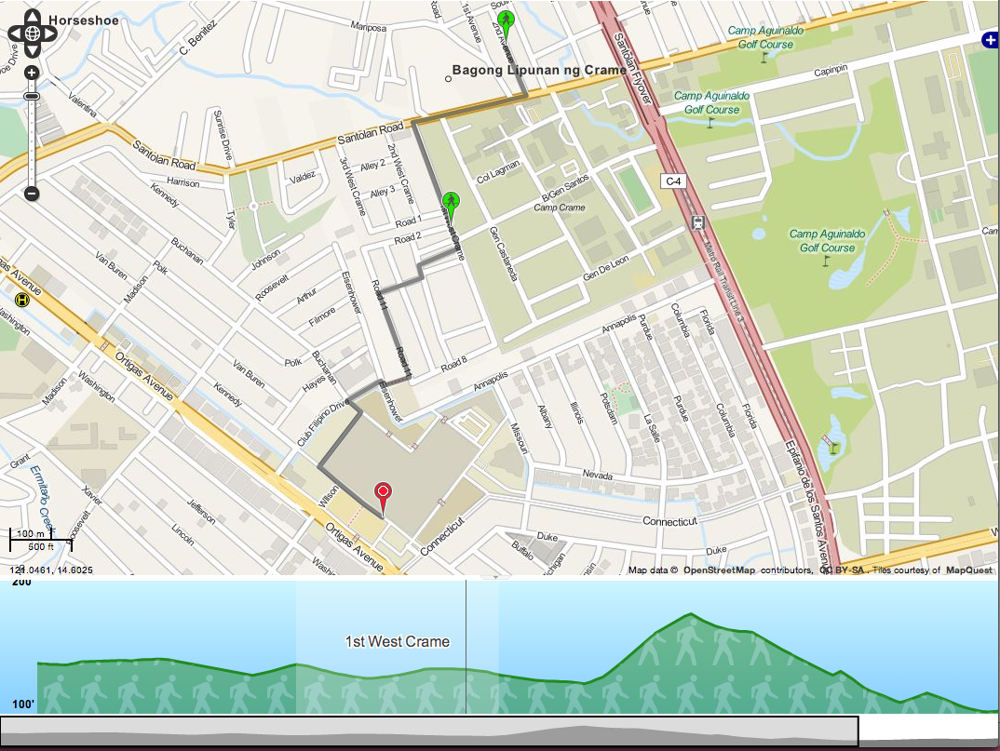

Elevation Data in OTP
Posted: | More posts about philippine-transit-app programming
One thing I hadn't tested out last time was OTP's support for elevation data. It makes use of this by showing the elevation you have to traverse while walking along the suggested route. It can also take it into account when suggesting bike routes.
The 5 minute tutorial actually discusses the elevation data briefly, but a more in-depth thing you can look at is the GraphBuilder documentation. It suggests using the ASTER dataset which is free but requires registration. I just opted to use the SRTM data available from the PhilGIS website.
I don't know about the ASTER dataset, but the PhilGIS data was in the ERDAS img format. OTP only supports GeoTIFF so there was a need to convert it beforehand. You can use GDAL for this. You'd just then run,
gdal_translate srtm41_90m_phl.img phil.tiff
Afterwards, it's just a matter of following the OTP instructions on using a local elevation dataset. The process actually doubled the size of the generated Graph.obj so it might not be ideal if you're running on limited RAM.
I've actually hosted a working example. It's pretty much at the limits of the RAM so it might be slow and unreliable, but you can test it out just for fun. Please don't abuse it though.